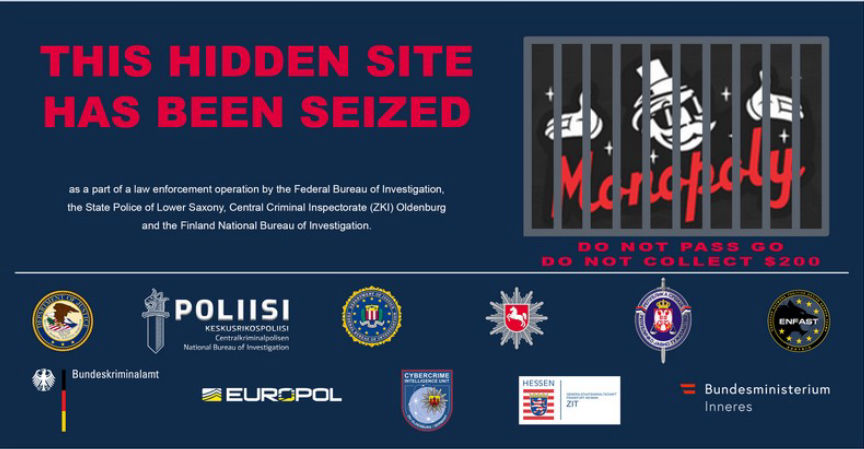
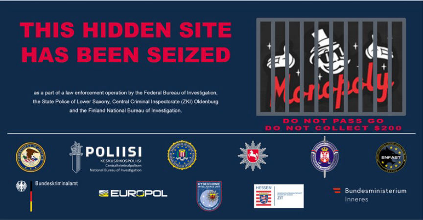

Monopoly Market Admin Indicted
~2 min read | Published on 2023-06-26, tagged Arrested, Indicted, Market-admin, admin using 297 words.
A grand jury in the District of Columbia charged a Croatia and Serbia citizen suspected of creating and running the now-defunct dark web marketplace, Monopoly Market.

The two-count indictment filed on July 26, 2022, accuses 33-year-old Milomir Desnica, of operating Monopoly Market since late 2019 and facilitating the sale of illicit drugs including opioids, stimulants, psychedelics, and prescription medications through the market. He is also accused of laundering the proceeds of running the market.
Law enforcement agencies in Germany and Finland took down the market in December 2021 after seizing its servers. The seized servers gave the investigators unlimited access to records of transactions and communications that took place on the market.
The investigators were allegedly able to identify Desnica as the market's admin following "extensive analysis" of the data acquired from the servers.
The investigators established that between April 2020 and July 2022, Desnica used at least two cryptocurrency exchanges to move the crypto he acquired from the operation of the market. To cash out, Desnica allegedly sold the cryptocurrency for cash to Serbia-based p2p traders.
Austrian authorities arrested him in November 2022. A search of his residence resulted in the seizure of a vehicle, electronic devices, and an undisclosed amount of cash.
In addition to Desnica's arrest, the data from Monopoly's servers was used as the basis for an international operation dubbed Operation SpecTor. The operation led to the arrest of 288 individuals suspected of buying or selling drugs through the market. The suspects' arrests resulted in the seizure of more than $53.4 million in cash and crypto, 850 kilograms of various drugs, and 117 firearms.
Desnica was recently extradited to the US to face charges of conspiracy to distribute and possess with intent to distribute 50 grams or more of methamphetamine and conspiracy to launder monetary instruments.

Monopoly Market seizure banner
The two-count indictment filed on July 26, 2022, accuses 33-year-old Milomir Desnica, of operating Monopoly Market since late 2019 and facilitating the sale of illicit drugs including opioids, stimulants, psychedelics, and prescription medications through the market. He is also accused of laundering the proceeds of running the market.
Law enforcement agencies in Germany and Finland took down the market in December 2021 after seizing its servers. The seized servers gave the investigators unlimited access to records of transactions and communications that took place on the market.
The investigators were allegedly able to identify Desnica as the market's admin following "extensive analysis" of the data acquired from the servers.
The investigators established that between April 2020 and July 2022, Desnica used at least two cryptocurrency exchanges to move the crypto he acquired from the operation of the market. To cash out, Desnica allegedly sold the cryptocurrency for cash to Serbia-based p2p traders.
Austrian authorities arrested him in November 2022. A search of his residence resulted in the seizure of a vehicle, electronic devices, and an undisclosed amount of cash.
In addition to Desnica's arrest, the data from Monopoly's servers was used as the basis for an international operation dubbed Operation SpecTor. The operation led to the arrest of 288 individuals suspected of buying or selling drugs through the market. The suspects' arrests resulted in the seizure of more than $53.4 million in cash and crypto, 850 kilograms of various drugs, and 117 firearms.
Desnica was recently extradited to the US to face charges of conspiracy to distribute and possess with intent to distribute 50 grams or more of methamphetamine and conspiracy to launder monetary instruments.